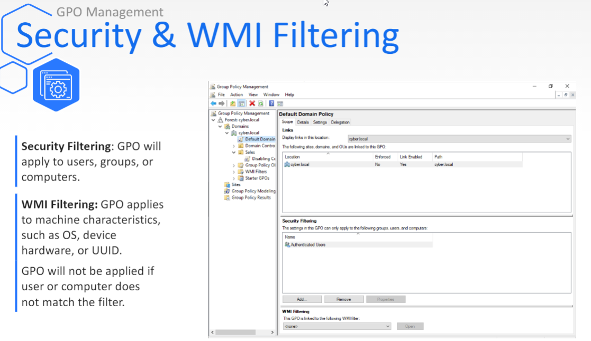

Enforce GPO
> gpupdate /force

Security Filtering
- GPO will apply the users, groups, or computers
WMI Filtering
- GPO is applied to hardware devices, the OS, and the UUID (
universally unique identifier
)
Script Node:
- Can be applied to computers and users
- Executed upon startup, login, shutdown, and logoff
- Various script languages can be assigned
--------------------------------------------------------------------------------
update Group Policy
> gpupdate
check group policy results
>gpresult
--------------------------------------------------
Making Policies for subgroup sales